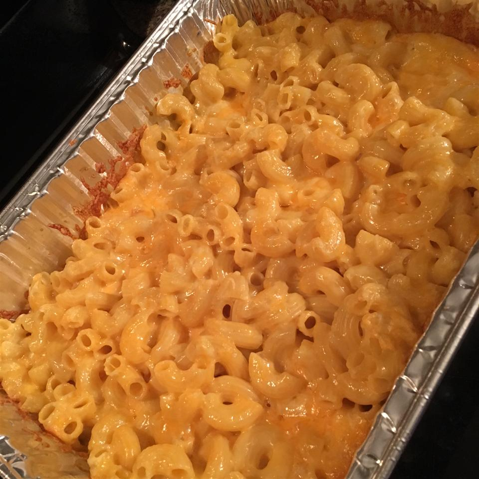

Mac and Cheese

Description
Macaroni and cheese—also called mac and cheese in the United States and macaroni cheese in the United Kingdom—is a dish of cooked macaroni pasta and a cheese sauce, most commonly cheddar.
Ingredients:
- 1 (16 ounce) package macaroni
- 1 (10.75 ounce) can condensed Cheddar cheese soup
- 1 cup milk
- 1 pound shredded Colby cheese
Steps:
- Preheat oven to 350 degrees F (175 degrees C). Bring a large pot of lightly salted water to a boil. Add pasta and cook for 8 to 10 minutes or until al dente; drain.
- Place macaroni in a 2 quart casserole dish. Stir in cheese soup and milk until well combined. Sprinkle with shredded Colby.
- Bake 25 to 30 minutes, or until cheese is brown and bubbly.
Go Back